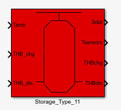
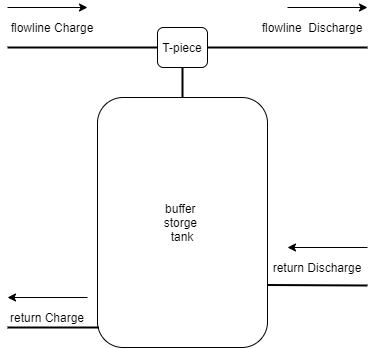
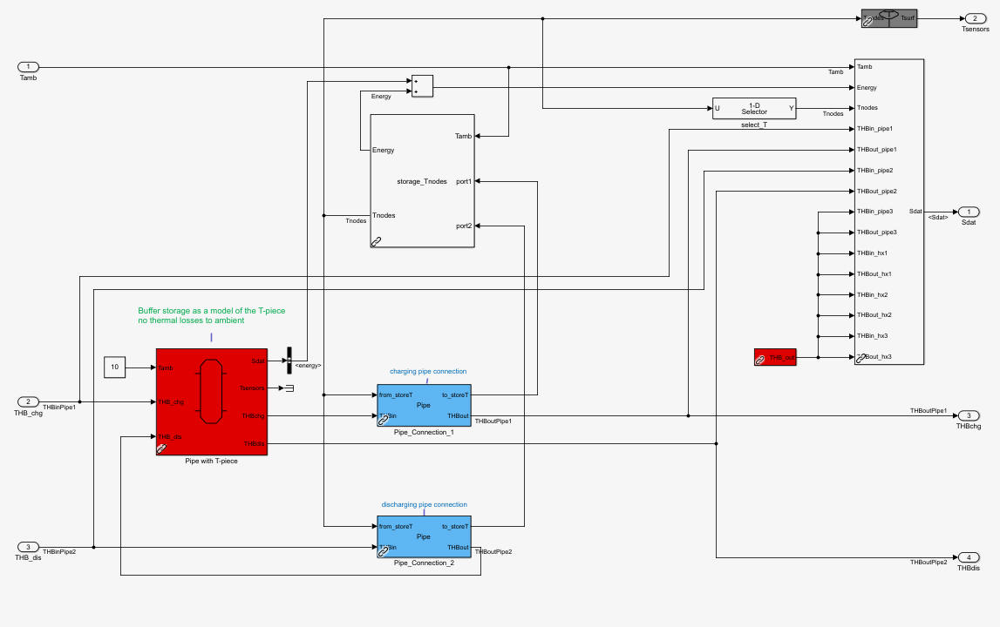
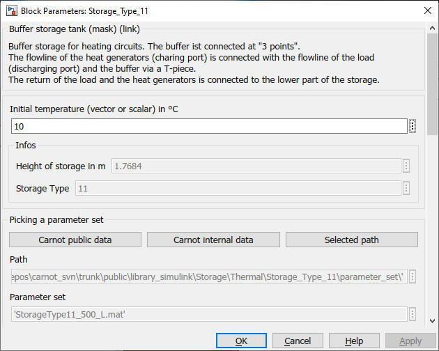
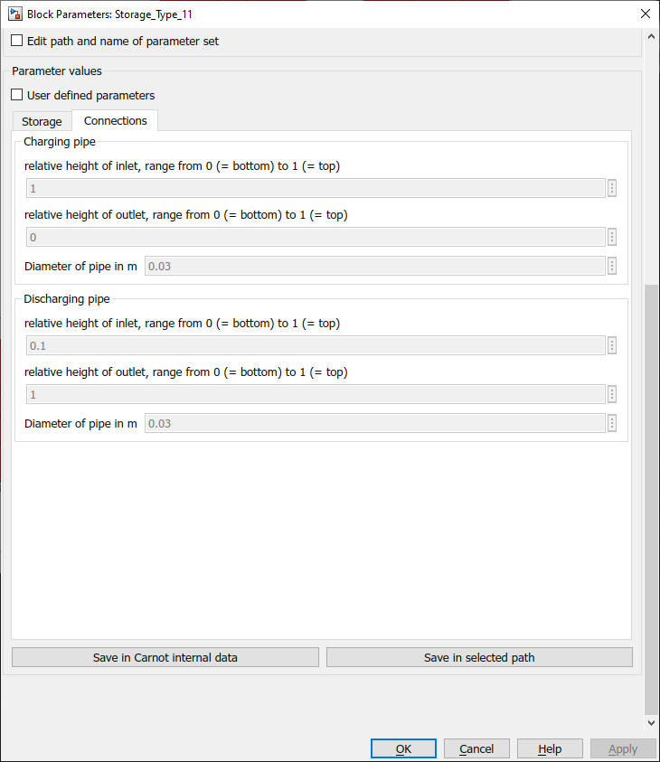

Storage_Type_11
Path: CARNOT/Storage/Thermal
Purpose
Multiport model for
buffer storage with
"3-point" direct connection.
Description
The model uses 2 buffer
storage tanks (Storage_Type_1) to model a
buffer storage with a "3-point" connection.
3 point means that the return flow is passing through the buffer tank via a
Pipe port and the flowline is
connected directly to the load. A T-piece in the flowline connects the buffer
tank.
The T-piece is modeled
by a small buffer tank of Storage_Type_1 with
one single node to model the complete mixing of the flow in the T-piece. The
T-piece "storage" has no thermal losses. Only the volume of the T-piece and its
connecting pipes has to be given.
The main storage is
modeled by a Storage_Type_1 with all its
parameters.

Figure: Hydraulic scheme of a 3-point connected
buffer storage tank.

Figure: Model implementation in Carnot
Storage_Type_11
Parameters and Dialog Box


Characteristics
Direct Feedthrough Yes
Continous states Number of nodes + 1 (for the T-piece)
Discrete states None
Sample time Inherited from driving block
Vectorized No